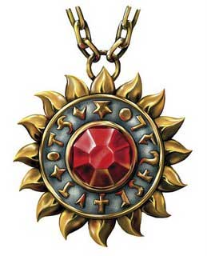
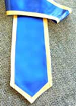
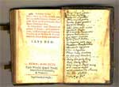
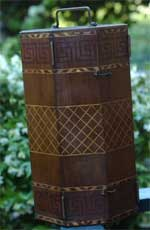
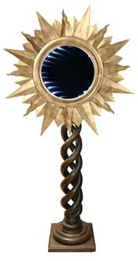

Tutti i chierici ed i paladini hanno l'obbligo di indossare ed utilizzare le vesti e gli oggetti sacri del culto tanatiano a secondo del loro ruolo ecclesiastico. Si noti che il costo di tali oggetti è interamente a carico del chierico, qualora però il chierico non disponga di denaro sufficiente ad acquistare gli arredi sacri per costui necessari sarà il Vescovo (od Arcivescovo) ad anticipare tale somma, senza alcun interesse, che poi il chierico dovrà restituire non appena guadagnerà denaro considerando tale credito della propria chiesa come privilegiato su qualsiasi altra spesa costui voglia effettuare.
SIMBOLO SACRO

Tutti i chierici
ed i paladini hanno l'obbligo di indossare in ogni momento il simbolo sacro
tanatiano. Si tratta di un grosso medaglione a forma di sole che rappresenta la
luce e la potenza divina tanatiana. Al centro del medaglione è incastonata una
gemma il cui valore varia a seconda del rango del chierico e del paladino. Anche
i devoti hanno il dovere di indossare il simbolo sacro tanatiano il simbolo
sacro indossato da costoro però non ha alcuna gemma incastonata al suo interno.
- Devoto di Tanatos
Simbolo Sacro in argento placcato in oro (senza gemma) dal valore complessivo di
15 corone, 1/2 lb. di peso
- Diacono, Iniziato all'Inquisizione, Frate Novizio, Paladino di I grado
Simbolo Sacro in oro con incastonato un citrino (5 g.p.) dal valore di 30
corone, 1/2 lb. di peso
- Inquisitore della Fede, Frate Sacrestano, Paladino di II grado
Simbolo Sacro in oro con incastonato un'ambra (50 g.p.) dal valore di 75 corone,
1/2 lb. di peso
- Sacerdote, Maestro dell'Inquisizione, Paladino di III grado
Simbolo Sacro in oro con incastonato un topazio (100 g.p.) dal valore di 125
corone, 1/2 lb. di peso
- Monsignore, Grande Inquisitore, Decano, Paladino di IV grado
Simbolo Sacro in oro con incastonato un opale di fuoco (250 g.p.) dal valore di
275 corone, 1/2 lb. di peso
- Vescovo, Abate, Sommo Inquisitore, Grande Difensore della Fede (Pontefice
Massimo)
Simbolo Sacro in oro con incastonato un diamante (500 g.p.) dal valore di 525
corone, 1/2 lb. di peso
Il Primo Inquisitore ed il Priore indossano il simbolo sacro corrispondente al
loro rango ecclesiastico effettivamente raggiunto.
VESTI SACRE
Tutti i chierici ed i paladini hanno l'obbligo di indossare in ogni momento le vesti sacre tanatiane anche se sotto una corazza od armatura. La tipologia ed il costo di tali vesti dipende dal rango e dal ruolo dell'ecclesiastico.
Diacono
La veste sacra dei Diaconi è una veste cilindrica bianca di cotone di
ottima qualità con un colletto circolare in argento. La veste ha un costo
complessivo di 15 corone.
Sacerdote
La veste sacra dei Sacerdoti è una veste cilindrica azzurra in seta con un
colletto circolare in oro. La veste ha un costo complessivo di 50 corone.
Monsignore
La veste sacra dei Monsignori è una veste cilindrica dorata in seta con
un colletto circolare in oro con incastonate al suo interno quattro pezzi di
ambra dal valore di 50 corone l'uno. La veste ha un costo complessivo pari a 250
corone.
Vescovo
Una volta divenuti Vescovi i Predicatori devono indossare la veste sacra
a costoro spettante per tale rango. Si tratta di una veste cilindrica bianca di
cotone di ottima qualità con cinque cordoni intrecciati che scorrono lungo la
superficie del vestito in fili d'oro, con un colletto circolare in oro con
incastonati quattro topazi dal valore di 100 corone l'uno. La veste ha un costo
complessivo di 550 corone.
Inquisitori
Iniziato all'Inquisizione
La veste sacra degli Iniziati all'Inquisizione è una veste cilindrica di
colore grigio chiaro di cotone di ottima qualità con un colletto circolare di
stoffa dura del medesimo colore. La veste ha un costo complessivo di 10 corone.
Inquisitore della Fede
La veste sacra degli Inquisitori della Fede è una veste cilindrica di colore
grigio chiaro di cotone di ottima qualità con un colletto circolare in argento.
La veste ha un costo complessivo di 15 corone.
Maestro Inquisitore
La veste sacra degli Inquisitori della Fede è una veste cilindrica di
colore grigio chiaro di cotone di ottima qualità con un colletto circolare in
oro . La veste ha un costo complessivo di 25 corone.
Grande Inquisitore
La veste sacra dei Grandi Inquisitori della Fede è una veste cilindrica
di colore grigio chiaro di cotone di ottima qualità con un colletto circolare in
oro con incastonate al suo interno quattro pezzi di ambra dal valore di 50
corone l'uno. La veste ha un costo complessivo pari a 235 corone.
Sommo Inquisitore
La veste sacra dei
Grandi Inquisitori della Fede è una veste cilindrica di colore grigio chiaro di
cotone di ottima qualità con un colletto circolare in oro con incastonati
quattro topazi dal valore di 100 corone l'uno. La veste ha un costo complessivo
di 435 corone.
Frate
Novizio, Frate Sacrestano, Decano, Priore
Tutti i frati devono indossare il saio di canapa dura. Un saio ha
comunemente un costo di 2 corone ed ha tasche per 20 corone.
Abati
Una volta divenuti Abati i frati devono indossare la veste sacra a costoro
spettante per tale rango. Si tratta di una veste cilindrica bianca di cotone di
ottima qualità con cinque cordoni intrecciati che scorrono lungo la superficie
del vestito in fili d'argento, con un colletto circolare in oro con incastonati
quattro topazi dal valore di 100 corone l'uno. La veste ha un costo complessivo
di 500 corone.
ARREDI SACRI DEL GIORNO DELLA CONSACRAZIONE
Tutti i Predicatori sono tenuti ad acquistare gli arredi sacri necessari al rito della consacrazione da tenersi ogni X di decade. Questi arredi sacri sono ritenuti personali ed ogni chierico deve possederne i propri.

Durante il Giorno
della Consacrazione i Predicatori devono indossare sopra il proprio vestito i
paramenti sacri spettanti per il loro rango. Si tratta di una stola consistente
in una banda di tessuto colorato ed intrecciato lunga circa 2 metri che si
indossa mettendola attorno al collo in modo tale che le due estremità scendano
parallele dinanzi al chierico. I paramenti cambiano a seconda del rango del
chierico:
Diacono : Stola in seta blu con bordi ed estremità ricamate in
filo di cotone bianco dal valore di 10 corone.
Sacerdote : Stola in seta blu con bordi ed estremità ricamate in
filo d'argento dal valore di 25 corone.
Monsignore : Stola in seta blu con bordi ed estremità ricamate in
filo d'oro con due pezzi di ambra dal costo di 50 corone l'uno incastonati in
ogni estremità per un valore complessivo di 135 corone.
Vescovo : Stola in seta blu con bordi ed estremità ricamate in filo
d'oro con due topazi dal costo di 100 corone l'uno incastonati in ogni estremità
per un valore complessivo di 235 corone.
Breviario della Consacrazione

Durante il Giorno della Consacrazione il Predicatore deve consultare il Breviario della Consacrazione. Si tratta di un piccolo testo sacro dal peso di 1 lb. e dal valore di 50 corone per l'edizione economica (125 corone per quella con copertina in cuoio duro e rinforzi in argento che è acquistata dai Monsignori e dai Vescovi) contenente i riti e le preghiere da effettuare durante il Giorno della Consacrazione.
Altare della Consacrazione

Durante il Giorno della Consacrazione è necessario che il Predicatore abbia un altare sul quale pregare ed effettuare gli eventuali riti (si pensi alla creazione dell'acqua santa). Solitamente l'altare è quello presente nella chiesa tanatiana. Qualora però il chierico si trovi in viaggio, lontano da una chiesa, è necessario che costui disponga di un altare portatile in legno da portare con se. L'altare è in legno con intarsi dorati all’ esterno, mentre all’ interno vi è bassorilievo del sole e della luce tanatiana. All'interno vi è, inoltre, un cassetto per riporvi oggetti sacri ed un vano per contenere il calice per la santificazione dell'acqua. All'esterno vi sono due cerniere per chiudere le ante ed una maniglia per il trasporto. Sulle due ante vi sono due portacandele in ferro battuto. Tale altare in legno portatile ha un peso pari a 8 lbs. ed un costo pari a 50 corone.
Sole Splendente di Tanatos

Sull'altare deve
essere sistemato il sole splendente di Tanatos, simbolo della luce e della
potenza divina. Questa statuetta quando presente nelle chiese è di metallo e
spesso di oro massiccio. I Predicatori che si trovano in viaggio portano con se
una versione più piccola dall'altezza di 50 cm. con piedistallo intarsiato in
legno e con la stella solare in metallo battuto il cui valore cambia al variare
del rango ecclesiastico del Predicatore secondo la seguente tabella:
Diacono : Stella solare in bronzo dal peso di 1/2 lb. e dal valore
di 7 corone.
Sacerdote : Stella solare in argento dal peso di 1/2 lb. e dal
valore di 30 corone.
Monsignore : Stella solare in oro dal peso di 1/2 lb. e dal valore
di 100 corone.
Vescovo : Stella solare in oro massiccio con incastonato un diamante da
500 corone dal peso di 1 lb. e dal valore di 650 corone.